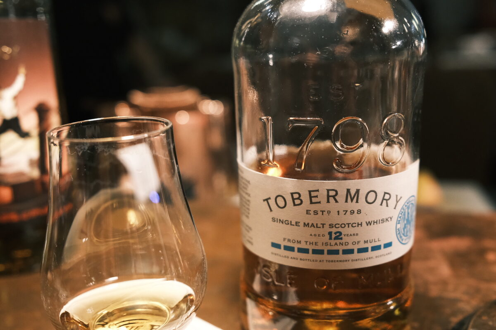

Tobermory "Manzanilla Finish" 12 years 46.3% (exbourbon and manzanilla)
Official bottling from Tobermory. From what I gather, spent ten years in exbourbon casks and two in manzanilla casks. For those playing at home, manzanilla is a dry sherry similar to a fino, known for its freshness and salinity. Unusual, as most sherry casks used for whisky are oloroso or PX.
Colour Amber.
Nose Leather, old boots. Pepper and chilli flakes. Yeasty funk (flor?). Chinese red dates: jujube. Salty, briny. Seashells and the beach. Heavy treacle and cream. Heady aroma, Manuka honey. Grassy.
Palate Malt, then into fig and dates. Brightness. There’s that leathery, briny, Tobermory funk. Salted caramel and vanilla slice. Boozy! Milky texture. Back to berry jams. Pretty spicy. A little winey. Lemons and a bit of grain.
Finish Spicy and jammy. Milky and malty notes. A little woody, some cocktail bitters. Moderate. Those jammy and milky notes last for quite a while.
Comments Tobermory funk is polarising, but I’m a lover. Real quality stuff, quite complex. Wish the finish was a bit fuller, but the nose is great. 86/100.

Posted by Dominic on 03 May 2021